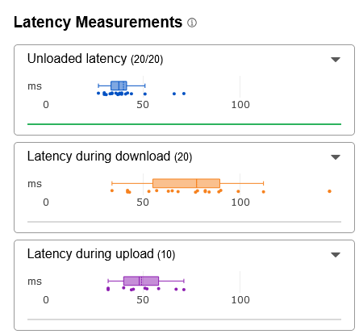
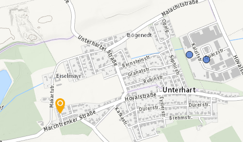
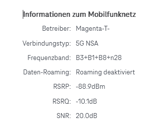
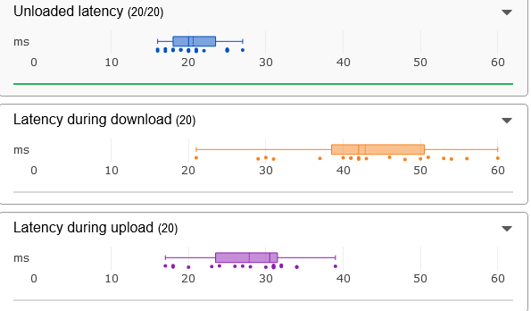

Hallo, hab mir auf empfehlung vom Verkäufer den Internet L Aktion 600mbit Tarif geholt. Sollte auch an meiner Adresse geben.
Daheim angekommen, hab ich ihn direkt getestet. Naja, 200Mbit. Hab probiert den Router umzustellen um nen guten Empfang zu bekommen. SNR liegt jz ca bei 20. Nochmal getestet. immer noch 200Mbit . hm
naja egal fürst erste, hab dann am Abend Counter Strike Games gespielt und die ganze Zeit nur Download Jitter Warnungen und Probleme bekommen. Hab jz den Test bei Cloudflare gemacht. um Mitternach an einen Dienstag

Naja, gar nicht mal so gut.
Download Geschwindigkeit variiert auch von Minute zu Minute. in der einen hab ich 150Mbit und der anderen (aber selten) 300Mbit. Mein Router verbindet sich nur ab und zu mit dem n78 Band(ganz selten). Hauptsächlich hänge ich im n28 ab. Warum? Hab ich den falschen Masten? Auf www.senderkataster.at hätte ich den nähersten genommen. Wohne ca. in der Rudolf-Gabat-Straße (Stadlhof, Wels) und hätte den rechts genommen. sollte ja passen. ist ca. 1km entfern 
Brauchst hier nur ein wenig das Forum durchstöbern, unzählige gleiche Fälle, überall.
Am 8.1.2025 um 08:39 schrieb Puma185:Brauchst hier nur ein wenig das Forum durchstöbern, unzählige gleiche Fälle, überall.
Hey @Puma185 ,
ich verstehe, dass es frustrierend sein kann, wenn man ein wiederkehrendes Problem sieht. Aber solche Beiträge wie "unzählige gleiche Fälle, überall" helfen leider weder dir noch anderen weiter. Sie tragen nicht dazu bei, eine Lösung zu finden oder diese Situation voranzubringen.
Liebe Grüße, JD. 🌻
du spielst Counterstrike über ein mobiles Internet und beklagst dich über Latenzeiten?
Hier mal Infos zu mobilen Internet, wenn es ums Zocken geht:
Mobile Internet bietet sowohl Vorteile als auch Nachteile, wenn es um Spiele geht, die eine geringe Latenz erfordern.
Hier ist eine Übersicht:
Vorteile von mobilem Internet beim Gaming:
- Mobilität: Du kannst überall spielen, solange ein stabiler 4G- oder 5G-Empfang vorhanden ist. Das ist ideal für Spieler, die viel unterwegs sind.
- Fortschritte durch 5G: Moderne 5G-Netzwerke bieten oft niedrige Latenzen und hohe Geschwindigkeiten, die für Echtzeitspiele geeignet sind. Dies reduziert Verzögerungen und sorgt für ein flüssigeres Gameplay.
- Unabhängigkeit von WLAN: Mobiles Internet ermöglicht das Spielen auch in Bereichen ohne WLAN-Verbindung, was Flexibilität bietet.
Nachteile von mobilem Internet beim Gaming:
- Instabilität der Verbindung: Mobile Verbindungen können durch Netzwerkauslastung, Signalstärke oder Umgebungsfaktoren schwanken. Dies kann zu plötzlichen Latenzspitzen oder Verbindungsabbrüchen führen, was besonders bei kompetitiven Spielen problematisch ist.
- Höhere Latenz im Vergleich zu Kabel/WLAN: Selbst bei gutem Empfang liegt die Latenz mobiler Verbindungen oft höher als bei kabelgebundenen oder hochwertigen WLAN-Verbindungen. Für Multiplayer-Spiele wird ein Ping unter 30 ms empfohlen, was mobil nicht immer erreichbar ist.
- Datenlimits: Viele mobile Datentarife haben begrenzte Volumina. Spiele mit regelmäßigen Updates oder hoher Datenübertragung können das Datenlimit schnell erschöpfen.
- Kosten: Mobiles Internet kann teurer sein als feste Breitbandverbindungen, insbesondere wenn große Datenmengen benötigt werden.
Fazit
Mobiles Internet eignet sich für Gaming, wenn du auf Flexibilität angewiesen bist und gelegentlich spielst. Für kompetitives Gaming oder Spiele, die extrem niedrige Latenzen erfordern (z. B. Shooter oder Echtzeitstrategie), sind jedoch kabelgebundene Verbindungen oder stabiles WLAN meist die bessere Wahl.
Liebe Grüße, JD. 🌻
Am 8.1.2025 um 16:19 schrieb Jonathan Dorian:Hey @Puma185 ,
ich verstehe, dass es frustrierend sein kann, wenn man ein wiederkehrendes Problem sieht. Aber solche Beiträge wie "unzählige gleiche Fälle, überall" helfen leider weder dir noch anderen weiter. Sie tragen nicht dazu bei, eine Lösung zu finden oder diese Situation voranzubringen.
Liebe Grüße, JD. 🌻
Dieser Standardsatz aber auch nicht, anders wenn man gleiche unzählige Themen zusammen fassen würde, denn die Thematik ist nachweislich die Gleiche.
10215-plötzlich-kein-5g-mehr-in-wien-simmering-–-habt-ihr-ähnliche-erfahrungen/#comment-59179
Bearbeitet von Puma185Am 8.1.2025 um 16:42 schrieb Puma185:Dieser Standardsatz aber auch nicht, anders wenn man gleiche unzählige Themen zusammen fassen würde, denn die Thematik ist nachweislich die Gleiche.
Vielen Dank für dein wertvolles Feedback! 🙏 Es liegt uns sehr am Herzen, an jeder Stelle zu helfen, wo wir können. 💪
Denke daran: Wir sind auch immer für dich da – hier oder auch auf unseren Social-Media-Kanälen. Melde dich jederzeit, wenn du Unterstützung brauchst! 💬
Liebe Grüße, JD 😊
@Jonathan Dorian klar ist Kabelgebunden immer besser. Leider ist der Ausbau aber noch nicht überall, schon gar nicht in Städten. Aber 2025 sollte man schon meinen können dass man keine Latenzspikes bekommen sollte. Hab nebenbei einen Vertrag von A1, um zu testen was besser passt und der hat keine Probleme. auch die letzten Jahrzehnte hatte ich keine Probleme mit irgendeinen Anbieter.
Fallst du LAN meintest mit kabelgebunden, ja klar ist mein PC mit LAN verbunden.
Ich glaub Magenta hat den Tarif einfach zu gut angeboten aber zu weniger ausgebaut um den neuen Kundenstrom stand zu halten.

Ich würd auch einen
SNR
von
20.0dB
als nicht schlecht empfehlen. Heißt die Verbindung vom Router zum Masten sollte auch top sein. Nervig is nur dass ich nur im
n28
Band bin aber sollte ja nichts an der Latenz verändern. Laut Router ist die Verbindung auch
Stark
? Also sollte ja laut Magenta bei mir keine Probleme geben. Auf der Stoerungsabfrage von Magenta gibt es auch keine Probleme. und Latenzspikes mitten in der Nacht und unter der Woche? Wie schauts dann aus wenn ich an einem Samstag in der hoch Zeit spielen will?
Hier nochmal als Vergleich. Magenta(600/60) vs anderer(250/20) Anbieter. Beide 5G, LAN verbunden, SNR: 20, gleicher Masten
oben Magenta, mit ziemlichen Spikes beim Downloaden. von ~30ms bis zu ~150ms
unten andere Anbieter, ~20ms bis ~60ms

vielen Dank, dass du dir die Zeit genommen hast, dein Anliegen so ausführlich zu schildern. Ich kann absolut nachvollziehen, wie frustrierend es ist, wenn die Internetverbindung nicht die erwartete Leistung bringt – vor allem, wenn es um so wichtige Dinge wie Gaming oder Streaming geht. Stabilität und Geschwindigkeit sind hier einfach entscheidend!
Wie du es beschreibst, klingt es so, als ob die Verbindung bei dir durch mehrere Faktoren beeinflusst wird, insbesondere durch die Nutzung des n28-Bandes anstelle des leistungsstärkeren n78-Bandes. Das erklärt auch die schwankenden Geschwindigkeiten und die höheren Latenzen. Ich verstehe, dass das besonders ärgerlich ist, wenn du bereits alles versucht hast, was in deiner Macht steht – von der Router-Positionierung bis hin zur Wahl des nächstgelegenen Masts.
Um dir bestmöglich zu helfen, würde ich dir empfehlen, folgende Schritte zu prüfen:
Manuelle Bandwahl (wenn möglich): Falls dein Router dies unterstützt, könnte eine Fixierung auf das n78-Band eine deutliche Verbesserung bringen. Das n78-Band bietet höhere Geschwindigkeiten und niedrigere Latenzen.
Dokumentation der Probleme: Es wäre hilfreich, wenn du regelmäßig Speedtests durchführst und diese dokumentierst (z. B. Uhrzeit, Geschwindigkeit, Ping). So können wir gemeinsam mit dem technischen Support gezielt nach einer Lösung suchen.
Kontakt mit unserem Technik-Team unter 0676 200 7777 (täglich 8:00 bis 22:00 Uhr oder via 24/7 Live Chat in der Mein Magenta App ) : Unsere Techniker können prüfen, ob es in deinem Gebiet derzeit Einschränkungen oder Optimierungsmöglichkeiten gibt. Vielleicht lässt sich auch etwas an der Netzpriorisierung ändern.
Ich möchte dir versichern, dass wir dein Anliegen ernst nehmen und alles daran setzen möchten, eine Lösung für dich zu finden. Dein Vergleich mit dem anderen Anbieter zeigt ja deutlich, dass eine stabile Verbindung möglich sein sollte – und genau das möchten wir dir bieten.
Bitte halte uns zu dem Thema am Laufenden.
Liebe Grüße, JD. 🌻
SINR von 20 ist meines Erachtens (natürlich je nach umliegenden Gebäuden/Bäumen und dem Netzausbau in deiner Umgebung) überhaupt nicht schlecht. Ich habe in 2054, wo gerade mal 1 Sendemast für alle zur Verfügung steht, einen max. SINR von 25 erlebt. Je nach Wetter (Regen, Schnee, Nebel oder Gewitter) und Jahreszeit wird die Luftlinie/Sicht zum Sendemast von den Bäumen der Nachbarn etwas verdeckt und im Schnitt erreiche ich einen SINR von um die 20 (mal so 16, mal so 21,3), womit ich schon eine recht stabile und starke Verbindung habe. Muss aber erwähnen, dass ich 5G NSA mit OutdoorUnit von A1 benutze. Funktionsweise der Netztechnologie und Empfangswerte haben ja den gleichen Sinn.
Nun zu deinem Thema zurück...
Wie @Jonathan Dorian schon schrieb, versuch bitte mal (sofern möglich), beim Router das n28 Band zu deaktivieren und das n78 aktiv zu lassen. Anschließend natürlich den Router kurz stromlos machen für wenige Minuten und dann neu ins Netz einbuchen lassen (theoretisch sollte ein Neustart über die Weboberfläche des Routers auch reichen).
Als Speedtest-Quelle bevorzuge ich igorslab.de/speedtest
Oder www.speedtestx.de hier lädst du generierte Dateien in gewünschter Größe herunter (diese Dateien beinhalten nichts, also keine Angst wegen Virus), dann kannst du im Browser die Downloadrate in MB/s (Megabyte pro Sekunde) sehen, welche du einfach x8 Multiplizierst, um auf MBit/s (Megabit pro Sekunde) zu kommen.
Evtl. könntest du durch minimale Standort-Änderungen (oft nur paar cm nach links/recht und oben/unten) schon zusätzlich nen besseren RSRP- und RSRQ-Wert erreichen, was dir insgesamt nen kleinen "Boost" in der Bandbreite und Stabilität der Verbindung bringen kann. So war's bei mir zumindest, da haben 2cm mehr nach rechts und 3-5cm nach oben nen deutlichen Unterschied gemacht.
Zusätzlich möchte ich erwähnen, dass 5G noch nicht ganz ohne das LTE-Netz auskommt, wie du evtl. durch die zusätzlich verbundenen Bänder B1, B3 und B8 gemerkt hast. Du könntest natürlich auch schrittweise die Kombination der LTE-Bänder ändern. Also zB B3 mal deaktivieren -> Speedtest, danach B3 wieder aktivieren und B8 deaktivieren -> Speedtest usw.
Bei mir hat ein Wechsel vom LTE-Band20 auf Band3 ebenfalls eine Verbesserung gebracht.